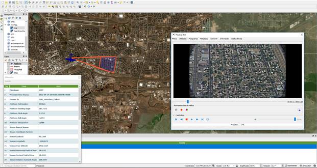

QGIS Full Motion Video
Plugin for QGIS > 2.99 which allows to analyze, visualize and process videos inside the QGIS environment. QGIS FMV accepts multiple video formats such as mp4, ts, avi, etc. It is also able to extract video frames, to capture the current frame, to plot bitrate and to observe the video metadata with aerial images and more. It also offers the possibility to create reports with video metadata.
Standards supported:
- "UAS Datalink Local Set", ST0601.11
Motivation
This development arises after observing that there was no free solution for the metadata extraction and video analysis in real time. All solutions are APIs or private tools such as
http://www.esri.com/products/arcgis-capabilities/imagery/full-motion-video,
for this reason, I decided to develop this open source project and, this way, offer this open source alternative to the QGIS community.
Screenshots

License
GNU Public License (GPL) Version 3
Donations
Want to buy me a beer (or gadget)? Please use Paypal button on the project page, Donate, or contact me directly.
If this plugin is useful for you, consider to donate to the author.
© All4gis 2018